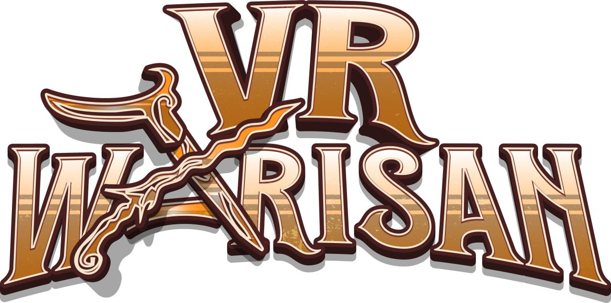

Virtual Reality / Android
VR Warisan Experience
Unity Engine & Android SDK Deployment
An immersive Virtual Reality experience focused on preserving and showcasing Malay historical heritage and architectural motifs. Optimized carefully for stable performance and deployment on Android mobile devices.
Download via Google Drive →